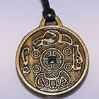

Вы будете богаты!
Амулет действительно приносящий деньги!
Забудьте о неудачах и долгах! Деньги будут Ваши. Не
сомневайтесь, не бойтесь и не переживайте.
Все точно наладится. Мы это знаем.
Имперский амулет приносит удачу и деньги своему владельцу. Амулет из настоящей царской монеты - Помогает Реально!
Это не выдумка и не игра слов. Если человек носит имперский амулет на себе, он никогда не будет беден. У него закрываются долги и наступает полоса везения, которая выносят его в безбедную жизнь.
|  |
Амулет изготавливается индивидуально, под конкретного человека.
Как все начиналось...
В далеком 1689 году в Троице-Сергиевом монастыре молодой царь Петр много молился, опасаясь стрелецких выступлений и предательства сводной сестры - царевны Софьи. Дьякон монастыря, видя его страдания, изготовил из имперской монеты амулет, целую ночь провел в молитвах, а на утро подарил царевичу сей амулет со словами: "От сего дня ты будешь непобедим, удача не покинет тебя, а богатству не будет конца! Да пребудет с тобой Господь!"
Царевна Софья и заговорщики вскоре понесли поражение, а Петр I стал величайшим царем в истории России и первым императором.
С тех пор династия Романовых расцвела и правила до 1917 года. А именной имперский амулет носил каждый император династии, потому как вера в его чудодейственную силу переходила от отца к сыну. Делали его по традиции в Троице-Сергиевом монастыре из имперской монеты. Ну а царская семья одаривала монастырь, который со временем переименовали в лавру, дарами и землями.
После революции священникам Троице-Сергиевой Лавры удалось бежать заграницу. Большевики надругались над лаврскими святынями, а секрет амулета, казалось, был утерян навсегда...
Однако со временем Троице-Сергиева Лавра ожила, и теперь россияне со всех уголков страны приезжают поклониться её святыням. А секрет имперского амулета свято хранится и поныне...
Секрет амулета
Амулет
согласно ритуала изготавливается и привязывается на конкретного человека, на его Имя. Ритуал основан на
силе молитвы и предков. Основой, из которой изготавливается талисман, и выполняется ритуал, является
царская монета.
Мы используем только настоящие монеты царских времён! (Это монеты различного
номинала, которые чеканили со времен Петра I и до 1916 года). Мы получаем их из давних пожертвований
старых монастырей. Монеты по способу добычи - чистые. Ритуал изготовления проходит на рассвете и не
несет негативных оттенков.
Амулет стягивает позитивные и денежные потоки, которые раньше шли мимо, на владельца амулета. Благодаря этому:
 Вам предлагают высокооплачиваемую работу;
Вам предлагают высокооплачиваемую работу;
 Должники отдают долги;
Должники отдают долги;
 Приходит везение в лотереях;
Приходит везение в лотереях;
 Появляются хорошие карьерные перспективы;
Появляются хорошие карьерные перспективы;
 Начинает сопутствовать удача в финансовых делах;
Начинает сопутствовать удача в финансовых делах;
 Внезапно приходит успех в бизнесе;
Внезапно приходит успех в бизнесе;
Изготовление амулета стоит от грн. Цена периодически повышается, так как спрос растет, а делать более трёх-пяти амулетов в день мы не можем, требует слишком много времени и сил.
Предупреждение!!! Все амулеты делаются только в порядке очереди, именно так, в какой очередности к нам поступали заявки. Мы не делаем более трёх-пяти амулетов в день. Если заказов более пяти, то они переносятся на следующий день. Поэтому возможна задержка в отправке на несколько дней. Оплата при получении на почте.
Амулет реально работает, и мы видим это как у людей вживую, так и по отзывам и повторным заказам...когда люди заказывали себе, а вскоре заказывают уже своим родственникам, детям и пр.
Приветствую. Я Голубева Марина из Соликамска. Хочу поделиться своей историей. Около десяти лет назад меня сопровождали постоянные болезни. Лекарства лечили одни, а калечили другие органы. Помогли знахари-экстрасенсы. Поправилось здоровье, начиналась, в каком-то смысле, комфортная жизнь. Длилась, однако, она не долго. Из-за постоянной нехватки денежных средств началась полоса сплошной борьбы за выживание. На работе платили гроши, каждая следующая работа, в итоге, приносила еще меньше доходов. Обращалась к экстрасенсам. Только безденежье все продолжалось. Ком долгов увеличивался с сумасшедшей скоростью. И вот случайно нашла информацию об амулетах. Решила ухватиться, как за последнюю спасательную соломинку. За одолженные деньги заказала индивидуальный «имперский амулет» для себя. Теперь он постоянно со мной. С долгами рассчиталась. Живу не просто по средствам, но и могу откладывать деньги на крупные покупки, на отдых и просто на «черный день». Убедилась сама и вам советую!
Здравствуйте. Моего взрослого сына постигали сплошные неудачи. Каким бы не занимался бизнесом - ничего не удавалось, не было заказов, подводили партнеры, подставляли коллеги, на наемных роботах начальство вечно было недовольно. Мне больно было смотреть на него, ведь нормальный работящий парень, а такое невезение. Знакомые подсказали обратиться за помощью к заговоренному амулету из царской монеты. Так и сделал. Заказал для сына, попросил его просто носить постоянно эту имперскую монету. Не сразу, но постепенно дела у сына начали налаживаться. Его начали ценить на работе и увеличивать зарплату. Благодаря этому, он сумел накопить сумму для своего небольшого бизнеса. Сумел создать и развивать свое собственное предприятие, которое приносит устойчивый доход. Я очень доволен конкретной помощью имперского амулета. Благодарю.
Петр Каримович
Я расскажу вам о том, как помог имперский амулет моей дочери. Моя девочка всегда была послушным и прилежным ребенком. Скромница и отличница в школе, тихая и прилежная в институте, старательная и дисциплинированная на работе. Вроде бы все хорошо. Только дочке никак не везло в личной жизни. Почему–то хороших парней в её окружении всегда завлекали менее скромные девочки. Годы шли, пора бы уже давно обзавестись семьей, иметь деток, только нам никак не везло. Нашла сведения о имперском амулете. Решила попробовать. Заказала имперскую монету заговоренную специально для моей дочери. Дочка согласилась носить этот амулет постоянно. Он практически сразу, как бы придал ей уверенности в себе, она расцвела, похорошела. Мужчины при встрече оглядываются на неё. Дочка встретила и полюбила заботливого и преданного человека, который стал её мужем. Я уже жду внука. Спасибо амулету!
Анна Витальевна Колокольщикова
Здравствуйте. Хочу поблагодарить за прекрасный амулет, помогший мне. Зовут меня Снежана, я из Альметьевска. Несколько лет назад в моей жизни начался период, когда я постоянно чувствовала тревогу, общаться с родственниками, друзьями, сотрудниками и просто с окружающими людьми было весьма тяжело, ведь непонятный страх не покидал меня. В какой-то момент поняла, что мне не обойтись без защитника, который постоянно должен ограждать меня от внешних угроз. Интернет помог мне найти ваш амулет. Благодаря специальным молитвам именно за меня из монеты изготовили мой индивидуальный оберег. Я уверенна, что именно его бесценное действие способствовало моей защите. Пока он со мной, все сложное для меня просто, никакие черные силы мне не страшны, любое общение с людьми будет выгодным мне. Жизнь теперь дарит только удачу. Спасибо моему амулету.
Форма заявки
Ваш заказ: 369 189 грн. при заказе до конца дня!